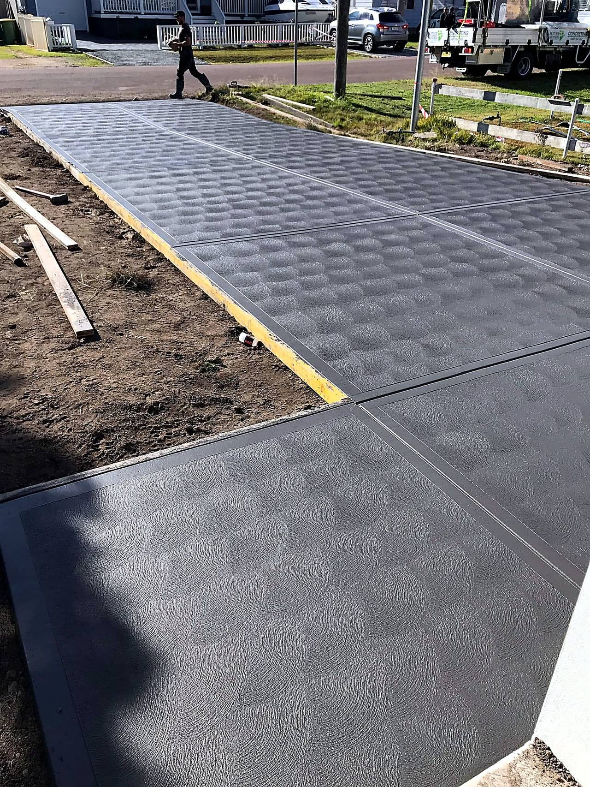
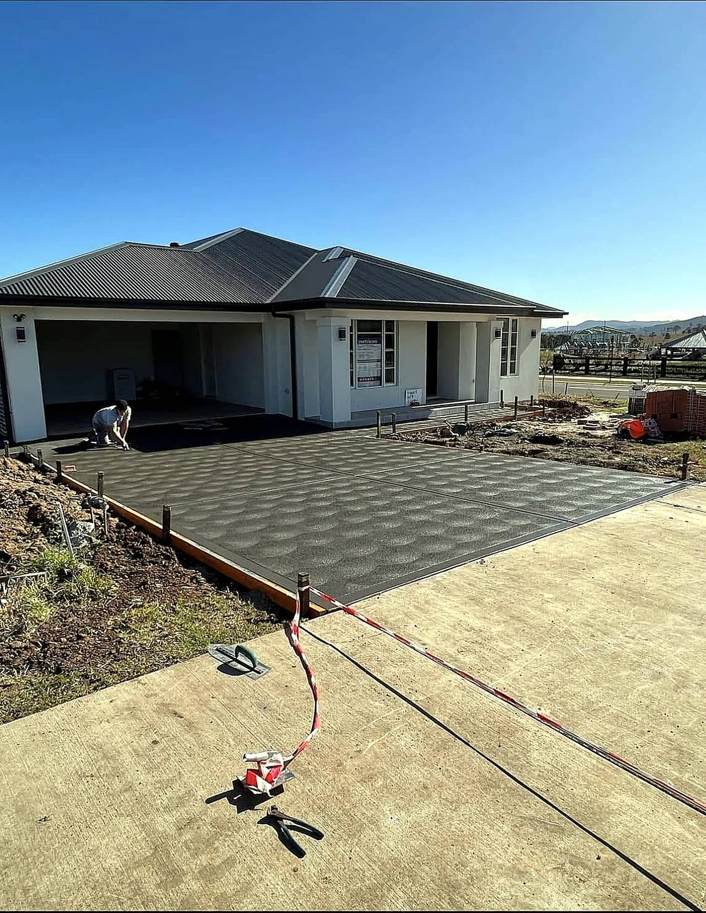
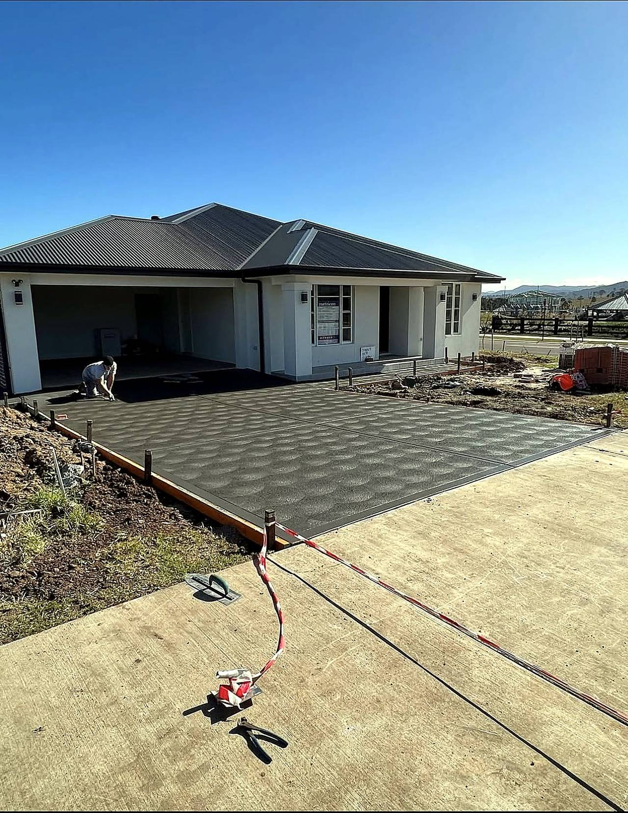

Driveways
Set out to the street level so water runs away from the garage, not into it. Mesh, control joints and a broom or exposed finish.
Driveways, slabs, footings and paths across Newcastle. Thirty years on the tools, proper set-out, and a finish cut and cured so the slab still looks right in ten years.

Residential concrete, plain and reinforced. The job is set out, formed and poured on the same visit unless the slab needs a cure before finishing.
Set out to the street level so water runs away from the garage, not into it. Mesh, control joints and a broom or exposed finish.
Levelled, compacted base, vapour barrier where it is specified, and the slab thickness the shed or build actually needs.
Trenches dug to the engineer's detail, reinforcement tied and poured in one run so the footings are consistent.
Narrow access and sloping ground handled with the right fall and finish, not a flat slab that holds water.
Council spec where it applies — levels, thickness and finish checked before the pour, not after a rejection.
Slabs for alfresco areas and pergolas, finished to suit how the space is used and what it sits against.
Concrete is unforgiving: once it is placed, the set-out and the fall are set too. This is the order it is done in.
Levels taken from the existing ground and the street, falls worked out, and the outline marked before anything is cut.
Strip to the right depth, compact the base, and get the subgrade flat — the part that decides whether a slab cracks later.
Formwork set to the finished level, mesh chaired up into the slab, and joints planned rather than cut wherever it decides to crack.
Placed, screeded, floated and finished — broom, trowel or exposed — while it is still workable.
Control cuts at the right spacing, curing and a walk-through on what to keep off it and for how long.
Asked often enough to put in writing. If the job needs more than this, it is in the quote.
| Element | Usual spec | Why it matters |
|---|---|---|
| Driveway slab | 100–125mm, SL72 mesh, 25–32MPa | Thickness and mesh carry the car; the MPa decides how it wears. |
| House / shed slab | 100mm minimum, vapour barrier, compacted base | Stops moisture coming up through the slab into the building. |
| Footings | To engineer's detail, tied reinforcement | The detail is the certification — it is built to it, not near it. |
| Falls | 1:100 away from buildings typically | Water that runs away does not find the weep holes or the garage. |
| Joints | Cut at 24–36× slab thickness | Cracks follow the cuts, not the middle of the slab. |
Driveways and slabs finished on site — the surface and the edges are the part that shows the work.


Local work, short travel, and the same crew on the pour. Ask if your suburb is not listed.
Suburb, roughly how many square metres, and what it is for — driveway, slab, path or footings. A photo of the site helps.
Newcastle Concrete Soulutions Pty Ltd
Newcastle NSW · 0412 705 429